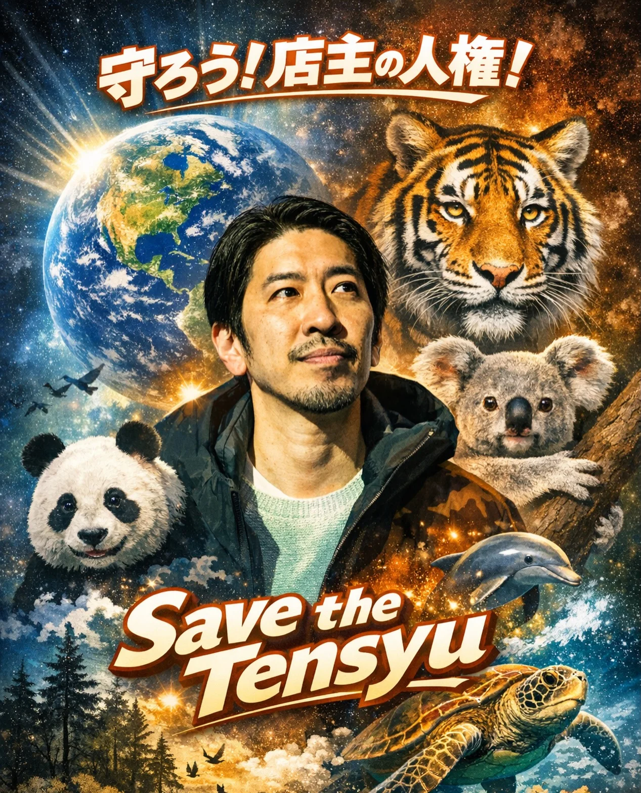

2026年2月2日
２月スタート！

２月スタート！ １２月・１月、 過去最高に忙しくさせていただきました。 ありがとうございます！ ということで２月は、 Save the Tensyu（月間） 店を整える準備期間に入ります。 溜まりたまった経理もせなあかんし、 健康診断にも行きます。 24時きっかり閉店の日が少し増えますが、 その分、より良い時間と空間をお届けします。 守ろう！店主の人権！ Save the Tensyu.
2026年2月2日

２月スタート！ １２月・１月、 過去最高に忙しくさせていただきました。 ありがとうございます！ ということで２月は、 Save the Tensyu（月間） 店を整える準備期間に入ります。 溜まりたまった経理もせなあかんし、 健康診断にも行きます。 24時きっかり閉店の日が少し増えますが、 その分、より良い時間と空間をお届けします。 守ろう！店主の人権！ Save the Tensyu.